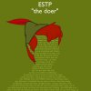

ESTP.  Chức năng chủ đạo : Se. Chức năng hỗ trợ : Ti. Chức năng thứ cấp : Fe. Chức năng hạ cấp : Ni. ./ Điểm mạnh ESTP là những người tràn đầy năng lượng, giải quyết vấn đề một cách chủ động, có phản ứng sáng tạo đối với những tình huống thử thách. Họ hiếm khi để các quy tắc và luật lệ ảnh hưởng tới việc tìm ra cách thức mới sử dụng những hệ thống sẵn có. Họ tìm ra những hướng giải quyết dễ dàng cho những vấn đề khó khăn và làm công việc của họ trở nên rất thú vị và vui vẻ. Họ linh hoạt, dễ thích nghi, sáng tạo, tháo vát, có khả năng hòa giải tốt, và là một teammate tuyệt vời. Họ thường xuyết hiện trong các hoạt động (thể thao, tiệc tùng, công việc) vì niềm đam mê của họ đối với cuộc sống và việc tận hưởng những khoảnh khắc trong cuộc sống. ./ Các đặc điểm của một ESTP. ESTP quan tâm đến tất thảy những gì đang diễn ra xung quanh họ - các hoạt động, đồ ăn thức uống, quần áo trang sức, mọi người,... tất cả những thứ đem lại những trải nghiệm mới lạ. Vì một lẽ, họ học hỏi được từ những hoạt động này nhiều hơn là từ học tập và đọc sách. Họ có xu hướng lao vào mọi thứ, vừa làm vừa học, tin vào khả năng tháo vát trời cho của mình. ESTPs thường có những đặc điểm sau: . Hay quan sát. . Thực tế. . Năng động, hòa mình vào các trải nghiệm hiện tại. ESTP đưa ra quyết định của mình dựa trên phân tích và suy luận logic, và có thể trở nên cứng rắn khi cần thiết. Họ thường: . Giải quyết vấn đề một cách hợp lý bằng những lý luận logic. . Thẳng thắn và quyết đoán. ESTP là những chuyên gia trong việc nhìn ra những thứ hiện tại cần và phản ứng nhanh chóng để đáp ứng những nhu cầu đó. Trong hầu hết các trường hợp, họ thường muốn ứng phó với vấn đề một cách khéo léo và linh hoạt hơn là đưa ra các nhận định và đánh giá. Họ tiếp nhận mọi thứ theo đúng bản chất của chúng và tìm kiếm những giải pháp thỏa đáng, hơn là áp đặt theo ý kiến của chính họ. ./ Hình ảnh của ESTPs trong mắt mọi người. Họ yêu cuộc sống và đắm mình trong nó; những người khác thường đáp trả lại sự nhiệt tình và hài hước của họ. ESTPs là những con người của hành động. Họ thường không thích và cố gắng tránh những chỉ dẫn dưới dạng văn bản. Giáo dục theo phương pháp truyền thống có thể gây khó khăn cho họ, nhưng họ sẽ làm tốt nếu nhìn ra được sự liên hệ với đời sống và được phép thực hành. Trong mắt mọi người, ESTPs là những người: . Thích giao lưu, vui vẻ, và rất tùy hứng. . Thích mạo hiểm, ưa phiêu lưu. . Gỡ rối những vấn đề thực tế một cách hiệu quả. ./ Những điều quan trọng cho sự phát triển bản thân của ESTPs. Đôi khi môi trường ngoại cảnh không thuận lợi cho ESTP phát triển và thể hiện mặt lý trí và giác quan của họ. . Nếu như phần tư duy của họ không được phát triển, họ sẽ không có một phương pháp chọn lọc hữu hiệu cho những thông tin đi vào qua các giác quan. Họ có thể sẽ gặp khó khăn trong vấn đề thiết lập các ưu tiên và đưa ra các quyết định vô căn cứ. . Nếu như phần giác quan của họ không được phát triển, họ có thể sẽ chỉ tập trung vào những dữ liệu được đưa vào ngay lúc đó hoặc đã có sẵn. Quyết định của họ chỉ để phục vụ các nhu cầu của giác quan, đặc biệt trong những việc có tính thử thách và nguy hiểm. Nếu như ESTP không tìm ra được môi trường mà họ có thể sử dụng hiệu quả những năng khiếu vốn có và được đánh giá cao vì những đóng góp của họ, họ sẽ thấy thất vọng, nản lòng và có thể: . Gặp khó khăn trong việc chấp nhận các quy định tổ chức và hoàn thành công việc đúng thời hạn. . Hoàn toàn chú trọng vào những hoạt động bên ngoài và những hứng thú nó mang lại. . Ưu tiên tận hưởng hơn là hoàn thành những nghĩa vụ quan trọng. ESTP có xu hướng tự nhiên ít chú ý tới phần trực giác và cảm xúc của mình. Nhưng nếu họ bỏ qua chúng quá nhiều, họ có thể: . Không nhìn ra nhiều mặt khác của hành động và quyết định của họ. . Không nhớ các ngày tháng và các sự kiện có ý nghĩ đặc biệt với người khác. . Không ý thức được ảnh hưởng của hành động của họ lên người khác. . Không có kiên nhẫn để thảo luận và tìm hiểu các mối liên kết, tương quan. Khi gặp áp lực lớn quá mức, ESTPs có thể có những suy nghĩ tiêu cực. Họ có thể cho rằng người khác không thực sự quan tâm tới họ, sau đó làm sai lệch những dữ liệu được đưa vào qua giác quan để đưa ra 'bằng chứng' cho những tưởng tượng của họ. Trích từ cuốn Introduction to type. dịch bởi @Linh